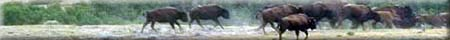
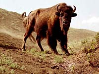

|
|
"Environmentally Sensitive Area". Please be careful where you walk and try not to disturb the natural environment. For additional information please contact Tourism Saskatchewan. | ||
Buffalo Pound Provincial Park | |||
| GPS: | 50d 25.99m N | 104d 36.90m W | 1835 feet |
| Location: | 20 kms north and 10 kms east of Moose Jaw. | ||
The "Great Trails Getaway" tourism region is located in south-central Saskatchewan. Buffalo Pound Provincial Park, within this region, is the gateway to the sweeping view of the Qu'Appelle Valley. The park is a recreation park of over 1930 hectares and is open year round. Like other provincial parks, full-facilities are available for the camper including an aquatic program, interpretive programs and miniature golf. The real draw to this park though, is the area itself. The area is named after its "buffalo pounds", corral-like features of the natural landscape once used by Plains Indians to contain buffalo. The animals were stampeded into the pounds, then killed for their meat, hides and bones. Plains bison were reintroduced to the park in 1972, and today a captive herd of twenty-two roam the hills. | |||
The bison was food, clothing and shelter for the Plains Indian, yet think of what it might have been like for a hunter to encounter a bison at close range... a full-grown bull stands two meters at the shoulder and weighs nearly a tonne and, it can run up to fifty kilometers per hour. | |||
| GPS: 50d 25.99m N, 104d 36.90m W, 1835 feet 29 July 96, 4:50 pm, Fuji Velvia 50, F8 1/125s | |||
Thousands of years before the advent of guns and horses, native tribes hunted on foot and devised ingenious ways to outwit and capture bison. Two of these hunting techniques are the "Buffalo Pound" and "Buffalo Jump". In the "Buffalo Pound" method, hunters took advantage of the bison's natural tendency to stampede when frightened or disturbed. First, the bison were lured into a long draw or coulee by a hunter who dressed in buffalo robes. Then the other hunters, who were lined along the coulee, stampeded the animals into a camouflaged log corral, where they were killed with spears and lances. | |||
Remnants of stone points, bone fragments and tipi rings tell us that the Qu'Appelle Valley was the site of bison hunts for thousands of years. Buffalo Pound Provincial Park gets its name from the discovery of several pre-historic 'pounds' in the surrounding hills. | |||
Once they numbered sixty million and when they ran, the earth shook. They were undisputed 'lords' of the prairies and the center-piece of Plains Indian culture. By the end of the 1800s, the North American bison was all but extinct. | |||
Today, we might experience the bison only in books or museums if it had not been for Canada's decision in 1906 to purchase the last surviving bison herd in Montana. It took three years and $200,000 to round up and transport the 700 bison to Canada. | |||

The 'Pablo herd', as it was called, eventually found a home in Alberta's Elk Island National Park, and it was from there that a herd of thirteen bison originally came to Buffalo Pound Provincial Park in 1972. | |||
About twenty-five Plains bison live in the paddock you see from this tower. Although captive, they follow the same yearly cycle as did their ancestors on the open plains.
| |||
Autumn is the time of the rut, when bulls are in their prime after fattening on prairie grasses through the summer. The herd is replenished each spring between April and June by the birth of rusty-red calves. New-born calves can get up and run with the herd three hours after birth. Protected from prairie fires, droughts and blizzards, captive bison can live to be forty years old. | |||

In captivity, food supplies are limited, and hay is put out to supplement the bison's natural diet. The size of the herd is controlled by selling calves to establish or maintain other captive herds. | |||

In mid-day, the bison often disappear into the shaded coulees. If you do not see the animals at first, hike a trail or visit the marsh. | |||
 Before you leave Nicolle Flats, you may yet see the bison -- the largest land mammals in North America. | |||

"We came to places where, as far as the eye could see, untold thousands were in sight; the country being fairly black with them ... these immense herds were moving north and there seemed no end to them." Cecil Denny, NWMP, 1874 | |||